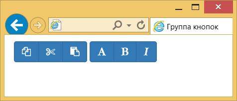
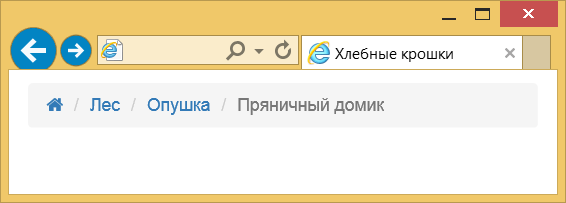
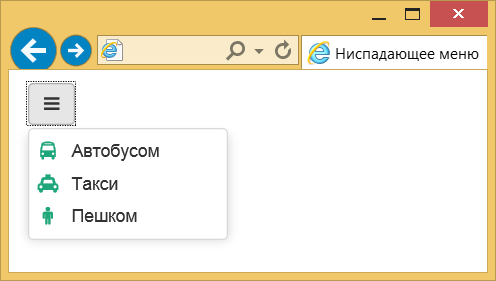

Работа с Bootstrap
Иконки из набора Font Awesome прекрасно сочетаются с фреймворками вроде Bootstrap. Хотя этот фреймворк уже содержит необходимый набор иконок, его можно расширить за счёт сторонних комплектов. В примере 1 показано создание группы кнопок с иконками.
Пример 1. Кнопки с иконками
<div class="btn-group">
<a class="btn btn-primary" href="#"><i class="fa fa-copy"></i></a>
<a class="btn btn-primary" href="#"><i class="fa fa-cut"></i></a>
<a class="btn btn-primary" href="#"><i class="fa fa-paste"></i></a>
</div>
<div class="btn-group">
<a class="btn btn-primary" href="#"><i class="fa fa-font"></i></a>
<a class="btn btn-primary" href="#"><i class="fa fa-bold"></i></a>
<a class="btn btn-primary" href="#"><i class="fa fa-italic"></i></a>
</div>Результат данного примера показан на рис. 1.

Рис. 1. Вид кнопок с иконками
Иконки также можно применять в качестве ссылок. Для примера возьмём хлебные крошки, в которых первым пунктом будет идти иконка домика (пример 2). Поскольку элемент <i> находится внутри ссылки <a>, иконка будет служить ссылкой и менять свой цвет при наведении на неё курсора мыши.
Пример 2. Хлебные крошки
<ul class="breadcrumb">
<li><a href="#"><i class="fa fa-home"></i></a></li>
<li><a href="#">Лес</a></li>
<li><a href="#">Опушка</a></li>
<li class="active">Пряничный домик</li>
</ul>Результат данного примера показан на рис. 2.

Рис. 2. Хлебные крошки
При создании ниспадающего меню вставим иконку вместо текста и добавим по иконке перед каждым пунктом меню. Для списков Font Awesome использует специальный класс fa-ul для элемента <ul> и fa-li для элементов <li>. Дело в том, что ширина каждой иконки разная и левый край пунктов списка из-за этого окажется неровным. Указанные классы исправляют этот недостаток для обычного списка, но в нашем ниспадающем меню приводят к ошибкам. Поэтому добавляем свой стиль, который устанавливает положение иконок нужным нам образом (пример 3).
Пример 3. Ниспадающее меню
<!doctype html>
<html>
<head>
<meta charset="utf-8">
<title>Ниспадающее меню</title>
<link href="css/bootstrap.min.css" rel="stylesheet">
<link rel="stylesheet" href="css/font-awesome.min.css">
<style>
.fa-ul {
margin-left: 0; /* Отступ слева */
}
.fa-ul > li {
text-indent: 1em; /* Сдвигаем текст вправо */
}
.fa-li {
left: -0.5em; top: 0.4em; /* Положение иконки */
color: #1fa67a; /* Цвет иконок */
}
</style>
</head>
<body style="margin-top: 10px;">
<div class="container">
<div class="dropdown">
<button class="btn btn-default" id="dropdownMenu" type="button" data-toggle="dropdown" aria-expanded="false">
<i class="fa fa-bars"></i>
</button>
<ul class="dropdown-menu fa-ul" role="menu" aria-labelledby="dropdownMenu">
<li role="presentation"><a role="menuitem" href="#"><i class="fa fa-bus fa-li"></i> Автобусом</a></li>
<li role="presentation"><a role="menuitem" href="#"><i class="fa fa-taxi fa-li"></i> Такси</a></li>
<li role="presentation"><a role="menuitem" href="#"><i class="fa fa-male fa-li"></i> Пешком</a></li>
</ul>
</div>
</div>
<script src="js/jquery.min.js"></script>
<script src="js/bootstrap.min.js"></script>
</body>
</html>Результат данного примера показан на рис. 3.

Рис. 3. Ниспадающее меню

Все материалы сайта доступны по лицензии Creative Commons «Attribution-NonCommercial» («Атрибуция — Некоммерческое использование») 4.0 Всемирная, если не указано иное.